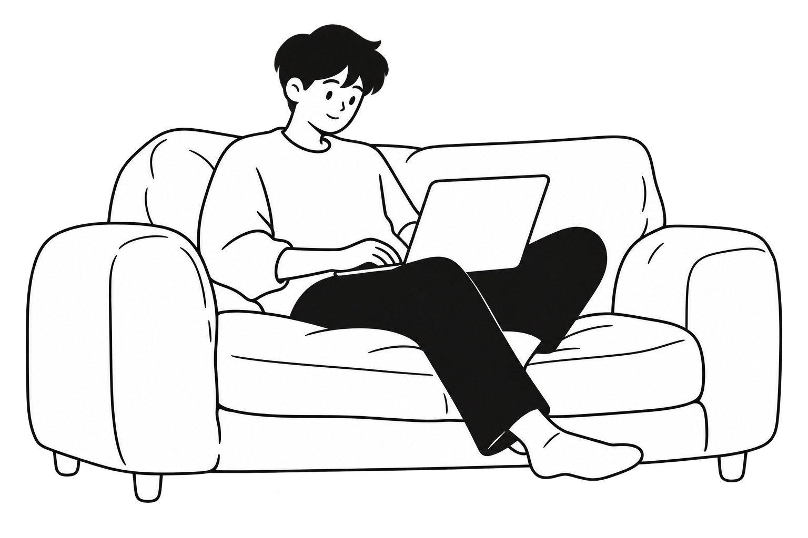
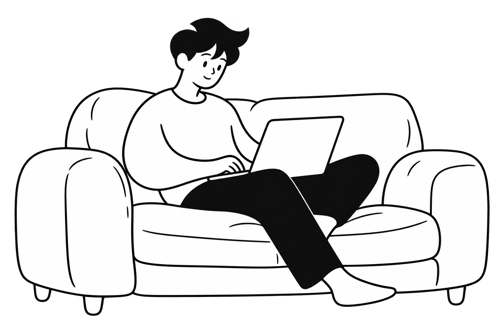

NOTION HANDDRAWN STUDIO · v1.2.0 · 2026-10-12
用柔和的长曲线概括人物肢体
本次重点：让手臂、腿和手脚的形状更抽象，仍能读懂放松坐着使用电脑的动作。
v1.1 · 减少内部细节
袖口、手腕和脚掌仍保留较多具体形状。v1.2 · 进一步简化肢体轮廓
手臂与袖子连贯弯曲，脚收成小楔形，保留操作电脑的接触。 本次检查
- 基于同一张原图编辑一次，对照 C293、C296 官网人物参考。
- 两张原图均为 1536 × 1024，具有真实透明区域；此页用白底预览看清造型。
- 手臂和脚的概括变化明显；腿部变化较小，脸部仍保留原样例的卡通倾向。
- 新主题生成一致性未验证，用户审美复核待完成。
观察重点：手臂是否足够柔和，手脚是否简洁但可辨，整体是否接近你希望的官网人物感。
下载透明 PNG · 完整对比图 · 实际提示词 · 自评记录 · 参考分析
新增测试 U05：黑板书写男生（独立新图生成） · 新图自评：造型需要调整